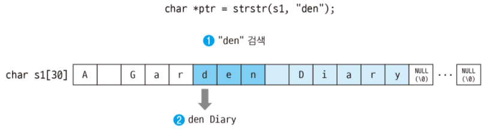

stdio <3-1> Text mode: snprintf(), strstr()
less than 1 minute read
snprintf():3
#include <stdio.h>
int snprintf(char *str, size_t size, const char *fmt, ...)
| return |
vlaue |
| 성공 |
문자열 마지막 \0을 제외한 프린트된 문자 수 |
| 실패 |
음수 |
| parameter |
Description |
| *str |
저장할 주소 |
| size |
최대 몇 Byte 저장할 것인가? |
| *fmt |
출력할 문자 |
#include <stdio>
#include <unistd.h>
#include <sys/types.h>
int main(void){
pid_t pid;
pid=getpid();
char command[1024];
snprintf(command, sizeof(command), "cat /proc/%d/maps", pid);
system(command);
return 0;
}
strstr(): 문자열내 문자열 검색
#include <string.h>
char* strstr(char *const_String, char const *const_SubString);
소스 문자열, 찾을 문자열
ex)
char s1[1024]="A Garden Diary";
char* strstr(s1, "den");
- 기능: 문자열 안에서 문자열(대소문자 구분함!) 검색해서, 시작 주소 리턴
| return |
value |
| 성공 |
찾은 문자열 시작주소 |
| 실패 |
NULL |

#include <stdio.h>
#include <string.h>
int main(){
char s1[30]="A Garden Diary";
char *ptr=strstr(s1, "den");
printf("%s\n", ptr);
return 0;
}
#include <stdio.h>
#include <string.h>
int main(){
char s1[1024]="A Garden Diary A Garden Diary A Garden Diary";
char *ptr=strstr(s1, "den");
while(ptr!=NULL){
printf("%s\n", ptr);
ptr=strstr(ptr+1, "den");
}
den Diary A Garden Diary A Garden Diary
den Diary A Garden Diary
den Diary